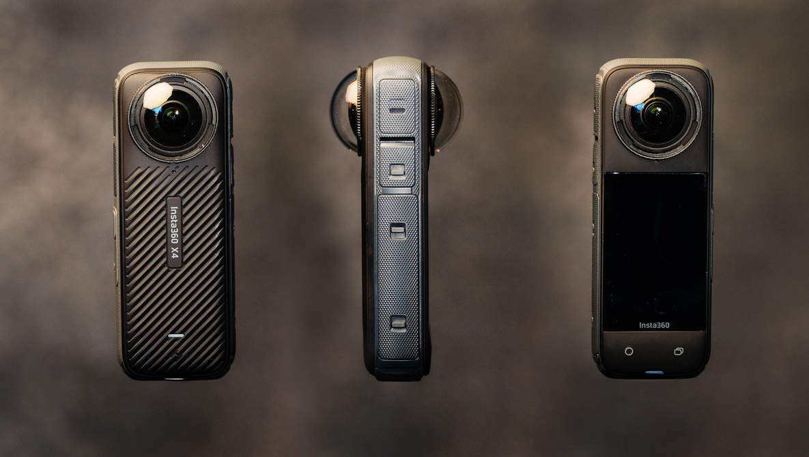
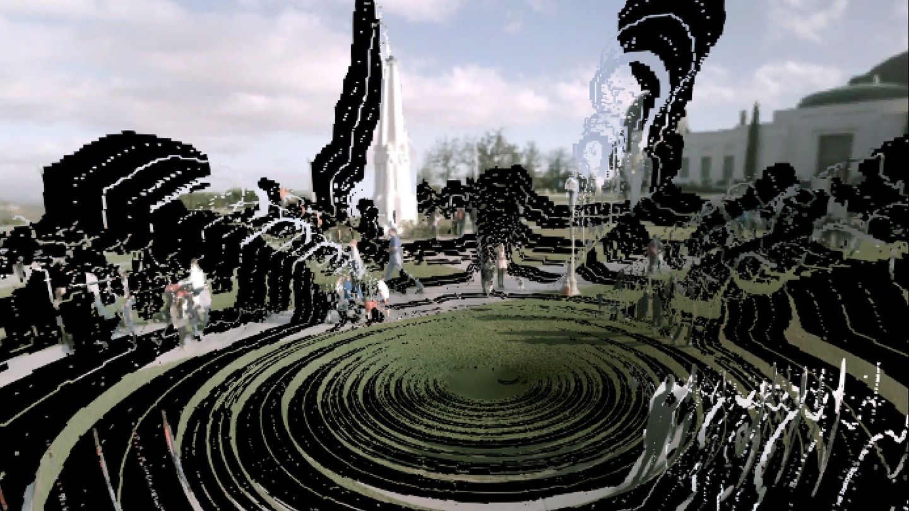
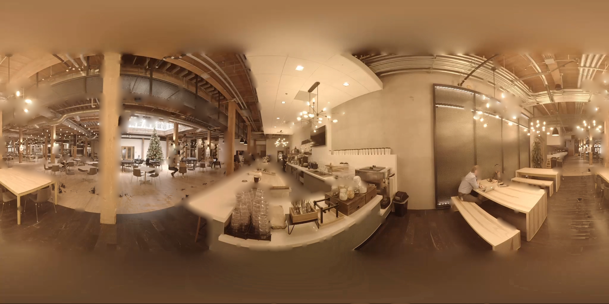
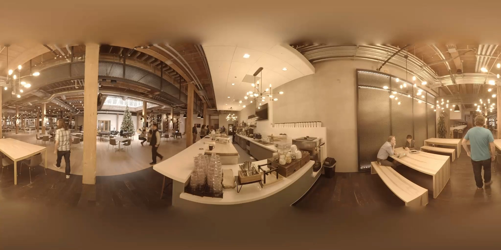

mono6D: Online 6-DOF Viewer
Transforming Casually Captured 360° Video into On-The-Go 6-DOF Immersive Experiences
Boyang 'Boe' Zhou
zby2003@cs.washington.edu, University of Washington
Abstract
Many efforts have been made to enhance the immersiveness of video viewing in VR, from stereo cameras to eye-tracked varifocal lenses. While these technologies have shown great potential, they often face limitations such as requiring specialized hardware and lacking an internet-friendly, open-source format for exchanging raw video data. In this project, I present mono6D, an online video viewer that achieves a motion parallax effect when viewed through any commercial headset with WebXR support. Built on previous research in image-based rendering and 360-degree image depth estimation, mono6D provides an integrated pipeline that transforms casually captured monocular 360-degree video into fully navigable 6 Degrees-of-Freedom (6-DOF) content, viewable online.
Introduction
6-DOF video, or 6 Degrees of Freedom video, is a media format that allows viewers to control both the position and orientation of the camera, enabling more immersive VR experiences. By leveraging 6-DOF head tracking data from modern VR headsets, users can explore pre-captured content with translational motion, introducing realistic motion parallax.
Compared to traditional 3-DOF 360-degree video, which is commonly seen on YouTube and other streaming platforms, 6-DOF video offers greater realism and interactivity, resulting in a significantly more immersive experience. This has strong implications for the next generation of media as we transition from 2D to 3D content.
Several approaches have been explored to generate 6-DOF video. One method involves capturing light fields using a custom-made camera array, encoding angular variations of light rays to reconstruct different viewpoints (Broxton et al., 2019). Another recent popular approach is 4D Gaussian Splatting, which, while capable of high-quality results, remains computationally intensive and requires input from multiple viewpoints.
I set out to address two key challenges seen in previous 6-DOF video solutions: 1. Ease of Capture – using only a single commercial device (i.e., a handheld 360° camera). 2. Accessibility – making the 6-DOF experience available in a widely distributable format.
To tackle these problems, I developed mono6D, an online 6-DOF viewer that takes any 360-degree video captured from a single viewpoint as input and generates a distributable 6-DOF video with motion parallax. mono6D is largely built upon the research led by Ana Serrano in the paper "Motion Parallax for 360° RGBD Video", which proposes separating monoscopic 360° video into three distinct layers based on depth and disocclusion across frames, with each layer rendered separately during playback (Serrano et al., 2019). Although this method does not achieve high-fidelity, state-of-the-art results and does not incorporate deep learning into its pipeline, it is relatively lightweight and computationally feasible to implement.
Throughout this project, I adopted an online-first approach, implementing the method presented in the original paper within a WebXR-based pipeline that is more suitable for online distribution. This greatly improves the availability of 6-DOF content and makes the idea of a content platform—similar to YouTube but exclusively for 6-DOF videos—more attainable. I discovered that front-end content loading and rendering speeds are fast for 6-DOF content, thanks to its compact size and straightforward rendering pipeline. However, preprocessing speed on the backend remains a challenge and requires further optimization for this particular layer-based approach.
Contributions
- Contribution 1: Published the online playback demo website (accessible through the link on top), which is written in three.js along with custom GLSL shaders to render the video layers.
- Contribution 2: Implemented a Python-based backend preprocessing code to turn a monoscopic 360 video into a series of videos and images that are ready to be fed into the online viewer, according to the paper "Motion Parallax for 360° RGBD Video."
Related Work
360 Video Capture360-degree video, an evolution of panoramic photography, enables the capture of an entire scene from a single viewpoint. There are two widely available 360 video formats:
- Monoscopic: Captured with a single camera pointing in all directions. This format is lightweight, suitable for handheld devices, and widely supported on platforms like YouTube and Facebook. However, it lacks stereoscopic depth perception. 
- Stereoscopic: Captured using at least two cameras per view direction to create depth perception. This format improves immersion but is more complex to capture and process, often requiring specialized rigs.

| Format | Setup Complexity | Depth | Field of View |
|---|---|---|---|
| Monoscopic | Low | No | 360° |
| Stereoscopic | High | Yes | 180° or 360° |
Image-based rendering (IBR) techniques are widely used to synthesize novel viewpoints for 6-DOF or volumetric video experiences. These methods can be broadly categorized into:
- Heuristic-Based IBR: These methods create a geometric proxy of the scene by analyzing depth maps and pixel correspondences between frames. They reconstruct the scene and reproject RGB values to render new views.
- Neural Rendering-Based IBR: Recent learning-based approaches, such as Neural Radiance Fields (NeRF) (Mildenhall et al. 2020), synthesize and interpolate novel viewpoints using deep learning. These techniques achieve photorealistic results but are computationally intensive and require extensive training data.
| IBR Method | Key Technique | Advantages | Limitations |
|---|---|---|---|
| Depth-Based Projection | Depth maps + RGB reprojection | Works well with structured depth input | Prone to artifacts in occluded regions |
| Layered Depth Image (LDI) | Multi-plane depth layers | Reduces depth artifacts, efficient for static scenes | Limited scalability for dynamic scenes |
| NeRF (Mildenhall et al.) | Neural volumetric rendering | High-quality novel view synthesis | Computationally expensive, requires large datasets |
| 4D Gaussian Splatting | Point-based neural representation | Real-time rendering, better performance than NeRF | Still computationally expensive for long sequences |
There are also several software applications available on app stores. A notable example is the Pseudoscience 6DOF Video Player, which is still downloadable from the Quest Store. Since it is not open-source, the exact implementation remains unknown. However, it requires both an equirectangular 360-degree video and depth maps as inputs and generates a final scene with noticeable artifacts (image below). It is likely based on a primitive image-based rendering approach without layer representation or depth optimization.
Method
Layered Video Representation- Foreground Layer: This layer is obtained directly from the RGB video and its corresponding depth map. It contains all visible objects in the scene that are repositioned based on user movement. The original video and depth map are used to represent the perfect scenario where the user’s head position overlaps with the capture point.
- Extrapolated Layer: As the viewer moves, occluded areas become visible. This layer provides missing information by revealing background regions seen in other frames. This is achieved by storing depth across all frames and selecting the deepest depth per pixel to extract static background elements.
- Inpainted Layer: Permanently hidden regions due to occlusion are filled through inpainting. Fully occluded disocclusion boundaries (extracted from the foreground layer) undergo PDE-based inpainting, smoothly interpolating known values. AI-powered inpainting is avoided due to the small discussion areas and limited head movement, favoring more efficient methods. 
An alpha map at disocclusion boundaries is used to determine when the foreground layer should fade to reveal the background layers. These boundaries are detected by analyzing edges in the 3D world using depth maps, followed by threshold filtering and logistic function-based noise reduction.
Raw depth maps from monocular depth estimation suffer from inaccuracies at object boundaries, depth bleeding, and temporal inconsistency. To refine depth estimates, an energy minimization approach is applied as described in the original paper:
arg mind (λdataEdata + λeEe + λsmEsm + λtEt)
- Edata: Ensures consistency with the original depth map.
- Ee: Enforces edge alignment to prevent depth bleeding.
- Esm: Smooths depth values to reduce artifacts.
- Et: Maintains temporal coherence using optical flow-based warping.
This method is directly from the original paper and has not yet been fully integrated into the current processing pipeline, so additional mathematical details are omitted.
Real-Time RenderingDuring playback, the three layers are rendered as separate meshes. Each vertex's xyz position is scaled by depth and positioned accordingly, with interpolation ensuring smooth transitions between depth values.
Vertex Position Calculation:
vertex_position = (position_x * img_depth, position_y * img_depth, position_z * img_depth)
where img_depth = 0.3 / (original_depth + 0.001). The inversion accounts for greater motion parallax effects at closer vertices, with 0.3 acting as a scaling parameter.
Final pixel values are determined through opacity blending across layers. To achieve this in the three-layer structure, the following opacity blending function from the original paper is applied to the foreground and extrapolated layers:
αF = S(δ) α̂F + (1 - S(δ))
where S(δ) is a sigmoid function of the distance between the head position and the projection center (capture point), with k=30 and c=0.15, ensuring natural fading based on the viewer’s distance from the center of projection.
Implementation Details
Backend:
The input of the whole system is monoscopic 360 video, the first step is to generate the corresponding depth map of the video. The specific implementation I used in this step is a neural-network based depth estimation pipeline published in “Depth Anywhere: Enhancing 360 Monocular Depth Estimation via Perspective Distillation and Unlabeled Data Augmentation” (Wang, Liu, 2024).
The generated depth map, along with the original RGB video, is then sent to the Python pipeline to be preprocessed. The first component of the pipeline is a Python script that optimizes the original depth map to denoise it and optimize the sharp transition between depth boundaries. The program obtains optical flow between frames using cv2.calcOpticalFlowFarneback and conducts objective optimization as described in the method section, and then applies a bilateral filter using cv2.ximgproc.jointBilateralFilter. The preprocessing script currently has some problems, so it is not fully functional and does not produce a high-quality depth map.
The second component of the Python preprocessing pipeline is generating the three layers and their corresponding alpha map using the input video and depth. The trimesh library in Python is used to transform frame depth information into a mesh and then assign the dot product between the view vector and face normals to the vertex. With the orientation information, the alpha map of the foreground layer is generated, which is then thresholded and applied a logistic function to locate the main boundaries. By finding the appropriate background depth and extracting the pixel values with those depths, the extrapolated layer is generated. The final inpaint layer is then generated through cv2.inpaint.
At the end of the preprocessing steps, we have the following documents:
- The original equirectangular 360 RGB video
- The optimized depth map video
- The alpha map video that controls foreground layer transparency
- The extrapolated layer RGB image
- The extrapolated layer depth image
- The extrapolated layer alpha map image that controls extrapolated layer transparency
- The inpainted layer RGB image
- The inpainted layer depth image
Frontend:
The web-based viewer is written in three.js. It uses three spherical meshes to represent the three layers. Each spherical mesh has its own fragment and vertex shader written in GLSL. For the inpainted layer, because it is a static image with no alpha value, it does not respond to any head movement. Instead, pixel positions are simply scaled by depth value to represent the position in space. The foreground layer and extrapolated layer render based on the head position, as pointed out in the method section, so their fragment shaders take in the head position and the origin of the spheres as input to calculate the amount of translational movement required for the pixels. Opacity blending is also conducted here to adjust which layer is visible.
The interaction and UI are simple. People are able to enter VR mode through the VR Button built into three.js and use the right-hand pinch to resume/pause the video or the left-hand pinch to cycle through all the available videos.
The three.js website is then built and deployed to Firebase web hosting along with all the videos/images necessary for rendering the 6-DOF videos.

Evaluation of Results
The evaluation is mainly consist of three parts: preprocessing speed, online playback speed, and 6-DOF viewing experience.
In terms of preprocessing speed, because the pipeline does not utilize ML-based methods except for depth estimation of the original 360 monoscopic video, the processing speed is around 10s per frame on an M1 Pro MacBook. Further speedup is expected when the preprocessing code is deployed to a server. However, real-time preprocessing is not possible (for example, for live streaming 360 video content to 6-DOF) due to how mono6D obtains the extrapolated layer, as we do not know whether an occluded region has been seen in the future.
The online viewer has a good loading speed thanks to the lean file structure, which only contains two videos and several images instead of a mesh/gaussian representation. At 2K resolution, a 30-second 6-DOF content can be loaded within 3 seconds and be viewed on Quest 3 at 30FPS. This shows the efficiency of using shaders to render the video with the help of WebGL.
Overall, the viewing experience is good. Given the limited resolution of current video assets loaded into the system for demo purposes, the image quality looks grainy on Quest 3 and sometimes pixels can become noisy across frames. This is a limitation of the original video quality and is true across all 360 videos captured on a handheld 360 monoscopic camera. The motion parallax effect is natural in certain videos but not in others. For example, static objects tend to have a smoother transition around their disocclusion boundary, while moving objects are often very noisy. Non-illuminating objects also tend to have a more natural look, while lamps and lights produce artifacts around them. Since the depth improvement script has not been fully implemented, this is an expected effect as the depth transition is not smooth and can bleed into surrounding objects.
Another potential limitation of the current approach is that all the preprocessing and render pipeline is static, where different videos with different themes (indoor, outdoor, many minions, little motion, etc.) go through the pipeline and share the common hyperparameters. This will likely not produce the optimal result. One simple example is thresholding of disocclusion boundaries when determining the alpha value of the foreground layer, which can employ very different threshold values between a room with few straight edges and an outdoor scene with many small noisy edges.
Future Work
Although mono6D online 6-DOF viewer has already showcased preliminary results, future work still needs to be conducted in the following domains:
- Modification to the layer composition, especially how the extrapolated layer is obtained, to enable real-time preprocessing. This can be done through only comparing the known depth to each other for any given pixel location.
- Try to make depth improvement work properly by correctly impleneting the objective optimization as described in the method section.
- Have an integrated online pipeline from monoscopic video directly to the 6-DOF viewer. The current codebase still needs human intervention to run the preprocess progarm and transfer files to the frontend.
- Slightly modify the pipeline and conduct more experiments on high-quality video captured by the new generation camera up to 6K. This might bring new challenges to the optimization of the video loading pipeline as well as real-time rednering.
- Compare the viewing experience side-by-side with other image rendering techniques, especially the ones that heavily incorporate Machine Learning such as 4D Gaussian Splatting.
Conclusion
In conclusion, mono6D online 6-DOF viewer is a proof-of-concept that demonstrates the feasibility for any user without sophisticated capture devices to distribute 6-DOF content online. The current implementation is not perfect and has some limitations, but the idea of an online 6-DOF content platform is promising and worth exploring in the age of XR. Through striking a balance between video quality and hardware constraints, we can see more immersive content adding a new dimension to how people consume content nowadays.
Acknowledgments
I would like to acknowledge that this work is largely built upon the research of Serrano et al., and this project would not have been possible without the theoretical framework established by their work. I would also like to express my gratitude to the CSE 493V staff team for their support.
References
Broxton, J., et al. (2019). "A 360-degree light field camera for 3D immersive video capture." In IEEE International Conference on Computer Vision (ICCV), pp. 387-395.
Serrano, A., et al. (2019). "Motion Parallax for 360° RGBD Video." In IEEE Conference on Computer Vision and Pattern Recognition (CVPR), pp. 10895-10904.
Wang, T., & Liu, R. (2024). "Depth Anywhere: Enhancing 360 Monocular Depth Estimation via Perspective Distillation and Unlabeled Data Augmentation." In IEEE/CVF Conference on Computer Vision and Pattern Recognition (CVPR), pp. 11725-11734.
Mildenhall, B., et al. (2020). "NeRF: Representing Scenes as Neural Radiance Fields for View Synthesis." In European Conference on Computer Vision (ECCV), pp. 405-421.